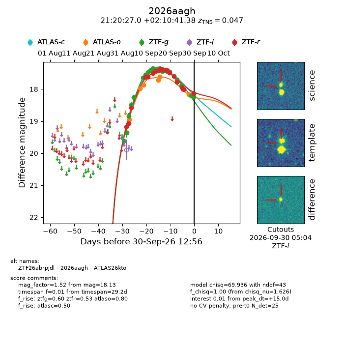
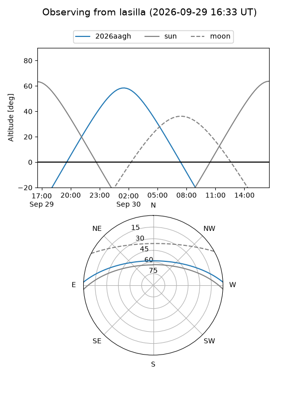
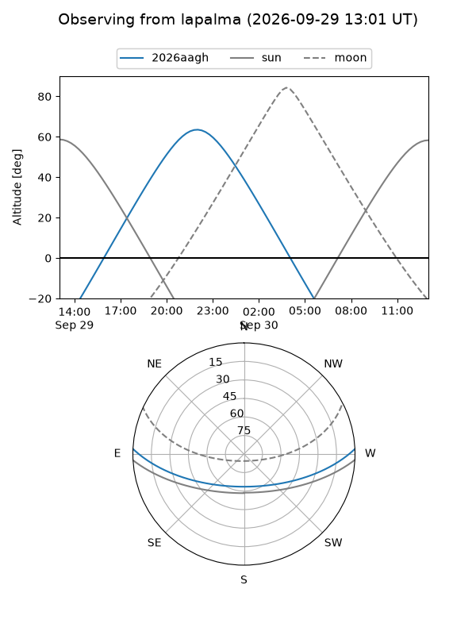
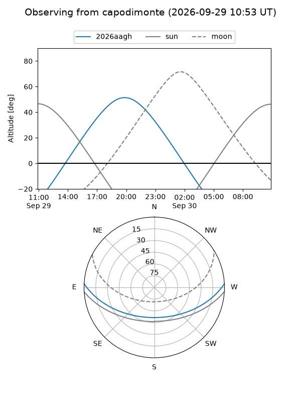
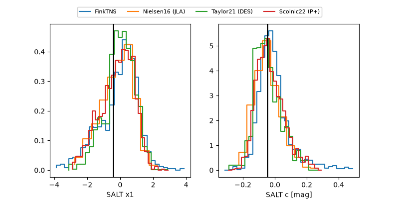

2026aagh
Target 2026aagh at 2026-09-30 12:58
Aliases and brokers:
FINK-ZTF: ztf.fink-portal.org/ZTF26abrpjdl
Lasair-ZTF: lasair-ztf.lsst.ac.uk/objects/ZTF26abrpjdl
ALeRCE-ZTF: alerce.online/object/ZTF26abrpjdl
YSE-PZ: ziggy.ucolick.org/yse/transient_detail/2026aagh
TNS name: wis-tns.org/object/2026aagh
Direct TNS query: direct search
alt names
ZTF26abrpjdl (ztf,fink_ztf)
2026aagh (tns,yse)
ATLAS26kto (atlas)
Coordinates:
equatorial (ra, dec) = 320.1124,+2.17816
equatorial (HMS+DMS) = 21:20:26.97,+02:10:41.38
galactic (l, b) = (54.2030,-31.40073)
Flags:
TNS type: SN Ia
TNS redshift: 0.0470
peak dt: +15.0
Photometry:
last atlasc=17.56, atlaso=18.16, ztfg=18.24, ztfr=18.13
1 atlasc, 6 atlaso, 21 ztfg, 18 ztfr detections
Lightcurve

Visibility



Additional plots
